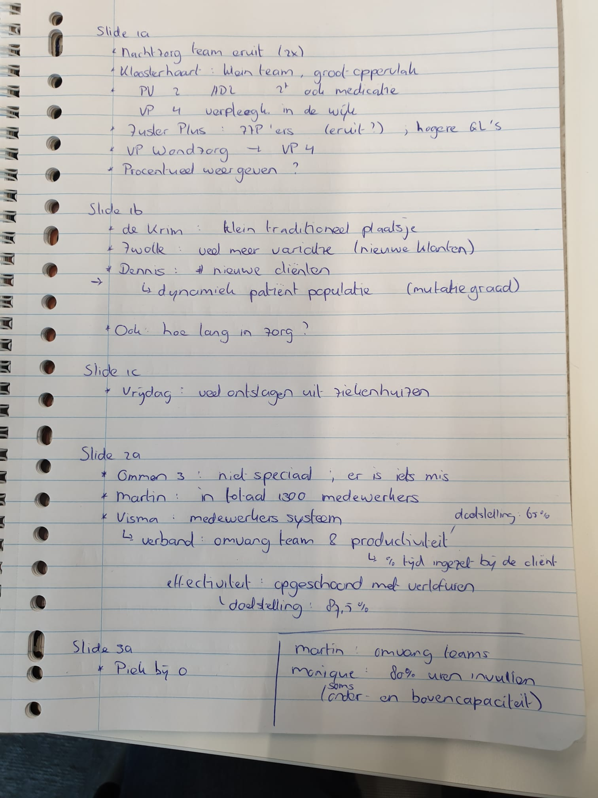

2022-10-20
OAS:
Peer review - tips Ger (is editor):
Klopt het?
Innovatie
Inter-arrival rates kunnen worden beschouwd als tweede afgeleiden van arrival times. Kan dit worden gekoppeld aan effectiviteit algoritme?
Idee: bekijk probleemdefiniering in andere artikelen
Interessant: Klassen and Yoogalingam (2009) >> SimOpt
HCP:

- Schrijfsessie:
TODO: Teams opschonen
TODO: Categorieen maken rural / suburban / urban
TODO: Grafiek aantal nieuwe patienten in een week
TODO: Gemiddeld # nwe clienten + sd
TODO: Histogram # weken in zorg >> VB
TODO: Histogram # uren zorg per client per week
TODO: Capaciteit contractueel per team per week vergelijken met vraag / Rekening houden met uitval / Percentages opvragen bij Carinova /
CSV op Surfdrive
References
Klassen, Kenneth J., and Reena Yoogalingam. 2009. “Improving Performance in Outpatient Appointment Services with a Simulation Optimization Approach.” Production and Operations Management 18 (4): 447–58. https://doi.org/10.1111/j.1937-5956.2009.01021.x.